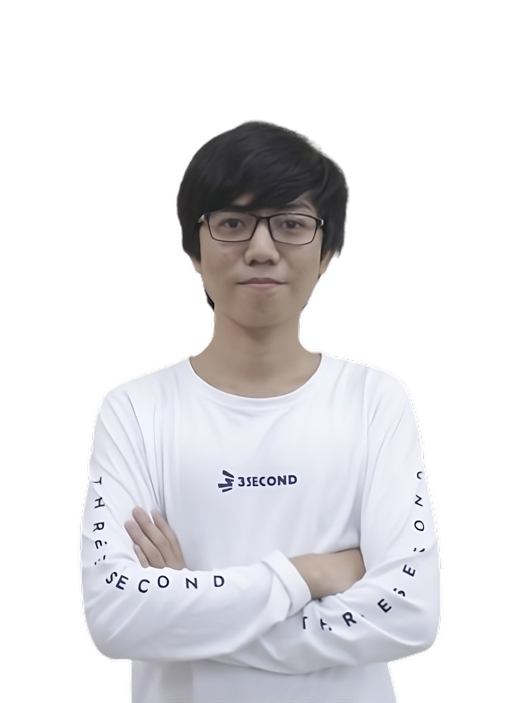

Hello There!
I'm Nathaniel Harvey Sarjono
Also known as Vey - Undergraduate Student at Sam Ratulangi University, Manado

Also known as Vey - Undergraduate Student at Sam Ratulangi University, Manado


Di era globalisasi, merupakan masa dimana perkembangan IPTEK mengalami perkembangan yang pesat. Masyarakat hidup dengan kemudahan dalam mengakses teknologi di kehidupan... Baca Selengkapnya
Tidur yang berkualitas adalah kunci utama untuk menjaga kesehatan fisik dan mental yang baik. Namun, tidak jarang seseorang mengalami masalah tidur yang tidak menyenangkan yang biasanya disebabkan oleh posisi tidur yang salah. Salah satu penyebab utama... Baca Selengkapnya
Selamat! 3 mahasiswa Ikom Umsida berhasil mendapatkan penghargaan pada kompetisi perlombaan yang diselenggarakan oleh Asosiasi Pendidikan Ilmu Komunikasi... Baca Selengkapnya